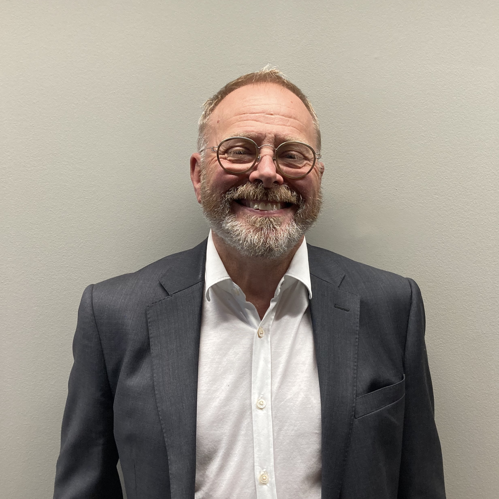
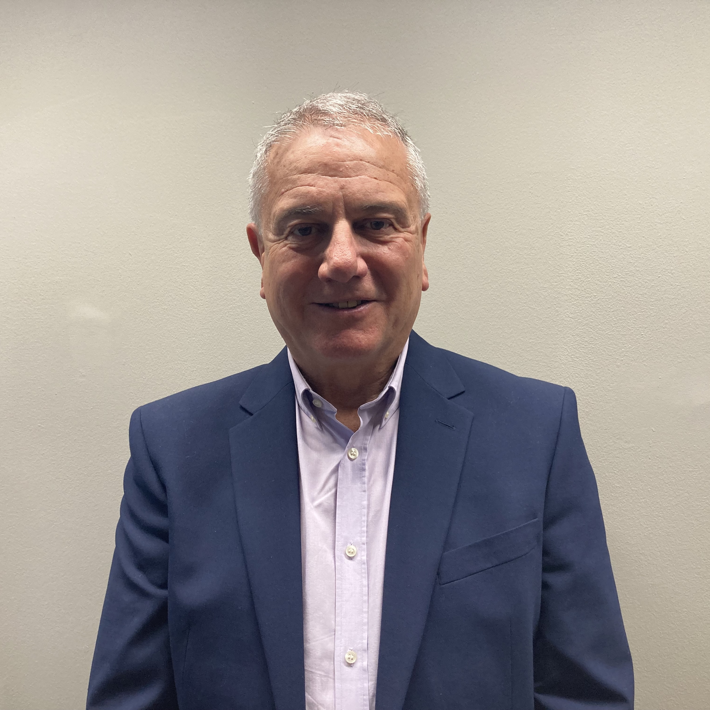
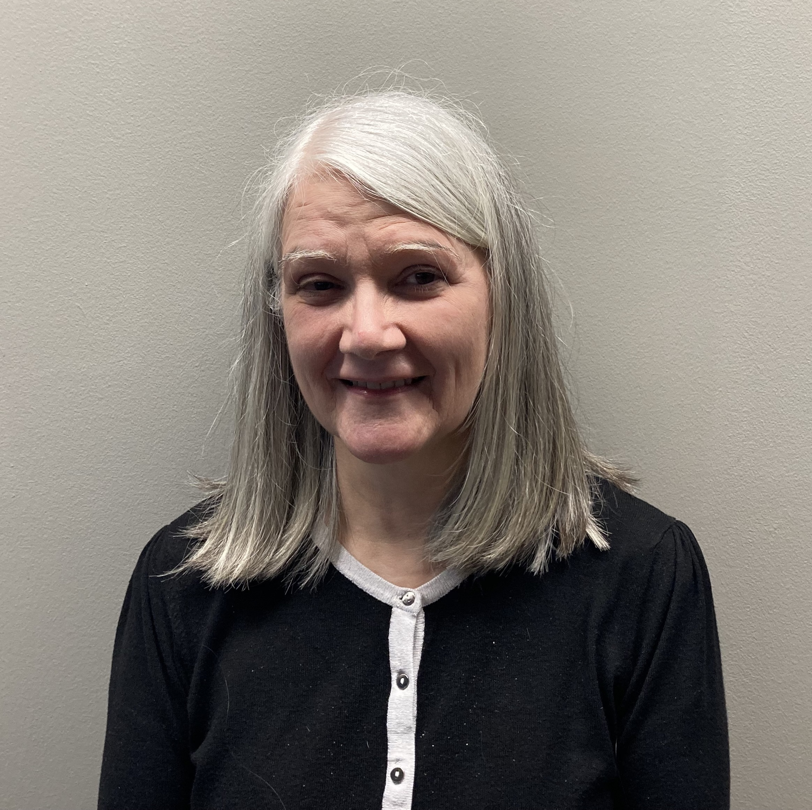

Trustees

Paul Milner
Paul spent most of his working life with PZ Cussons in a variety of HR roles
both in the UK and overseas. He retired from the post of Global HR Director
in 2011 and joined ZCT later the same year, becoming the Lead Trustee uppon
the death of Sir John in 2013. Paul was a governor of Stockport Grammar School
between 2011 and 2021.

Paul Evans
Paul obtained a PhD in Chemical Engineering from Imperial College, London in
1986. He worked in Research & Development within PZ Cussons for over 32 years,
leading development programmes in the U.K., Europe, Asia and Africa. He left
the business in August 2020 with his final position as Research and Innovation
Director and became a Trustee of the Zochonis Trust in July 2021.

Graham Calder
After a successful career at Deloitte's, Graham joined PZ Cussons as Finance
Director in 1995 and was appointed Deputy Chairman in 2006. He became a Trustee
in 1998 and worked alongside Sir John.
Staff

Marie Gallagher - Management Assistant
Marie has over 20 years experience with the Trust. She starting working for Sir
John Zochonis/the Trust in 2000 and worked for PZ Cussons for a number of years
before that. Marie is the main point of contact for the Trust.
Two of the Trustees meet weekly to review applications formally. The full board of Trustees
have two meetings, with advisors, at the half-year and full-year stages (AGM) The Zochonis
Charitable Trust's financial year runs from 6 April to 5 April the following year.